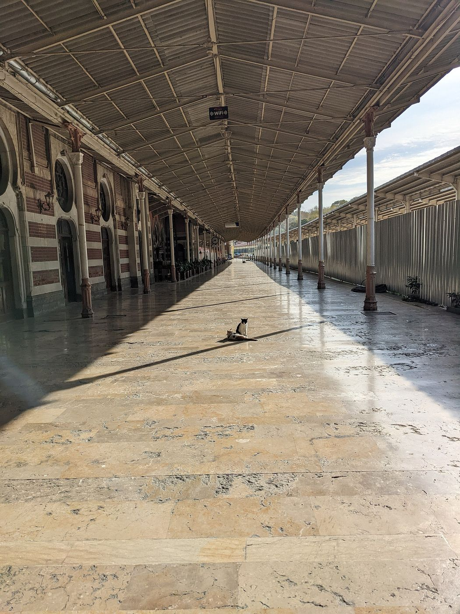
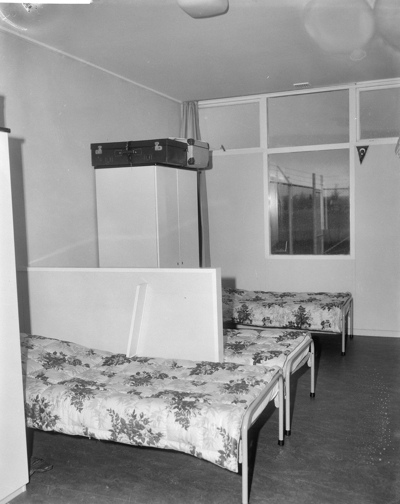

Bir garip ölmüş diyeler
Yunus Emre
Üç günden sonra duyalar
Soğuk su ile yuyalar
Şöyle garip bencileyin
Je n’ai qu’une langue, ce n’est pas la mienne.
Jacques Derrida, Le monolinguisme de l’autre
I
Kelimelerin bazen kendi hikâyelerini anlatmaya hazır bir sabırla beklediği olur. Arapçadaki ġ-r-b kökü, güneşin batmasını, bir şeyin gözden uzaklaşıp kaybolmasını anlatır. Akşam namazının adı olan mağrib, batı anlamındaki garb, yabancı ve kimsesiz anlamındaki garip ve yurdundan uzakta olmanın hâli olan gurbet, aynı kökün dallarıdır.1 Türkçe bu kelimeleri ayrı ayrı ödünç aldığı için aralarındaki akrabalık çoğu konuşucunun kulağından kaçar. Ama 30 Ekim 1961’de Bonn’da imzalanan işgücü anlaşmasının ardından Sirkeci’den Münih’e kalkan trenlere binen yüz binlerce insanın yaptığı yolculuk, kökün iki anlamını tek bir harekette birleştirmişti: Batıya gidiyorlardı ve gurbete gidiyorlardı.2
Yunus Emre’nin yedi yüz yıl önce yazdığı dörtlük, gurbetin belki de en eski ve en çıplak tarifini yapar. Garip ölür; haberi ancak üç gün sonra gelir; onu soğuk suyla yıkayan eller yabancı ellerdir. Dörtlüğün ilk dizesindeki fiile dikkat etmek gerekir: ölmüş diyeler. Garibin ölümü, ona tanıklık edemeyenlerin dilinde, başkasından duyulmuş bir haber olarak, -mış ekiyle yaşanır. Türkçenin dolaylı geçmiş zamanı, konuşanın olaya tanık olmadığını, onu ancak sonradan ve bir başkasının ağzından öğrendiğini bildirir.3 Gurbetin dilbilgisi budur: Uzakta yaşanan hayat, geride kalanlar için bir rivayettir. Doğumlar, düğünler, hastalıklar ve ölümler telefonla, mektupla, bayram ziyaretlerinde anlatılan hikâyelerle gelir. Kimse onlara tanık olmamıştır; hepsi olmuştur, duyulmuştur, söylenmiştir. Ama bu dilbilgisinin öbür yüzü de vardır. Gurbetteki insan da memleketinde olup biteni artık aynı ekle öğrenir: Annesi hastalanmış, mahalle değişmiş, çocukluk arkadaşı evlenmiş. İki yer arasında yaşayan özne, iki yönden de rivayetin içine düşer.
Edward Said, sürgün üzerine yazdığı ünlü denemeye sürgünün üzerine düşünmek için tuhaf biçimde çekici, yaşamak içinse korkunç olduğunu söyleyerek başlar.4 Bu cümlenin uyarısını ciddiye almak gerekir. Göç üzerine yazılan metinlerin çoğu, ister edebî ister kuramsal olsun, gurbeti bir imgeye, bir metafora, insanın varoluşsal yabancılığının bir simgesine dönüştürmeye eğilimlidir. Oysa gurbet her şeyden önce somut bir hayattır: vardiyalar, kira sözleşmeleri, oturma izinleri, dil kursları, okul toplantılarında çocuklarının tercümanlığına muhtaç kalan anne babalar, kışın erken kararan öğleden sonraları ve her yaz binlerce kilometrelik bir sıla yolu. Psikanalizin bu hayata söyleyebileceği bir şey varsa, bunu ancak bu somutluğu unutmadan söyleyebilir.
Türkiye’nin kendi kültürü bu somutluğu çoğu zaman psikanalizden daha iyi kaydetmiştir. Şerif Gören’in 1979’da çektiği, Hülya Koçyiğit’in başrolünü oynadığı filmin adı, Almanya, Acı Vatan, iki kelimelik bir çözümleme gibidir: Gidilen ülkeye “vatan” denmektedir, ama bu vatanın tadı acıdır. Gurbet türkülerinden ve “Almancı” filmlerinden yaz aylarının sıla yoluna, Yugoslavya’nın içinden geçen ve kuşaklar boyunca kazalarıyla, kuyruklarıyla, sınır kapılarıyla anlatılan o uzun karayoluna kadar, göçün hafızası büyük ölçüde şarkılarda, filmlerde ve aile hikâyelerinde taşınmıştır. Bu hafızanın psikanaliz açısından ilginç yanı, acıyı bir yere, bir yola, bir ülkeye bağlamasıdır. Acı “Almanya”dadır, “gurbet”tedir, “yol”dadır. Ama klinik çalışma, bir acının adresinin her zaman göründüğü yerde olmadığını bilir. Gurbetin acısı, bazen gurbetten çok önce başlamış bir kaybın, bir ayrılığın ya da bir suskunluğun, göçle birlikte kendine yeni bir ad bulmasıdır.
II
Psikanalizin kendisi bir sürgün hikâyesiyle biter. Mart 1938’de Avusturya Nazi Almanyası’na katıldığında Freud seksen bir yaşındaydı, on beş yılı aşkın bir süredir çene kanseriyle yaşıyordu ve Viyana’dan ayrılmayı uzun süre reddetmişti. Kızı Anna’nın Gestapo tarafından bir gün boyunca sorgulanması, kararını değiştiren olaylardan biri oldu. Ayrılık hazırlıkları sürerken, 12 Mayıs 1938’de Londra’daki oğlu Ernst’e yazdığı mektupta, bu karanlık günlerde kendisini ayakta tutan iki umuttan söz eder: ailesini yeniden bir arada görmek ve, Almanca yazılmış mektubun ortasında birdenbire İngilizceye geçerek, to die in freedom, özgürlük içinde ölmek.5 Bu küçük dil değiştirmenin üzerinde durmak gerekir. Henüz gitmediği ülkenin dili, Freud’un kendisinden önce mektubuna varmıştır; özgürlük kelimesi, ancak gidilecek yerin dilinde söylenebilmiştir. Gurbetin dili, bazen gurbetin kendisinden önce gelir.
Freud hayatının son on beş ayını Londra’da geçirdi; son yılını Hampstead’deki 20 Maresfield Gardens’ta. Viyana’daki çalışma odası, antikaları ve divanıyla birlikte, neredeyse eksiksiz olarak bu evde yeniden kuruldu. Sesinin bugüne kalan tek kaydı, Aralık 1938’de BBC için yapılmış kısa bir konuşmadır ve İngilizcedir: Ağzındaki protez yüzünden güçlükle konuşan yaşlı bir adam, hayatının işini, öğrendiği ama hiçbir zaman içinde yaşamadığı bir dilde özetler.6 Psikanalizin kurucusunun sesinin bize bir yabancı dilde ulaşması tesadüf değildir. Freud’dan sonra psikanalizin tarihi, büyük ölçüde sürgünlerin tarihidir: Viyana’dan, Berlin’den, Budapeşte’den Londra’ya, New York’a, Buenos Aires’e dağılan analistler, kuramlarını ve hastalarını başka dillerde yeniden kurmak zorunda kaldılar. Bugün psikanalizin temel kavramlarının çoğunu bir çevirinin içinden okuyor olmamız, bu dağılmanın izidir.

III
Göçü psikanalitik bir kavram olarak ilk kez sistemli biçimde ele alan çalışmalardan biri, kendileri de sürgün olan iki analistten gelir. Arjantinli León ve Rebeca Grinberg, 1976 darbesinin ardından Buenos Aires’ten Madrid’e göç etmişlerdi; 1984’te yayımladıkları Göçün ve Sürgünün Psikanalizi, bu deneyimin içinden yazılmış bir kitaptır.7 Grinberg’lere göre göç, yalnızca bir yer değiştirme değil, bir dizi kaybın aynı anda yaşandığı bir krizdir: insanlar, sokaklar, kokular, iklim, ses tonları, alışkanlıklar ve bunların hepsini taşıyan dil. León Grinberg’in daha önceki çalışmalarında geliştirdiği bir düşünceye göre kimlik duygusu üç bağ üzerinde durur: mekânsal bağ, yani bedenin ve çevrenin bir süreklilik içinde yaşanması; zamansal bağ, yani dünkü benle bugünkü ben arasındaki süreklilik; ve toplumsal bağ, yani başkalarıyla kurulan ilişkilerin tanıdık örgüsü. Göç bu üç bağı birden gevşetir.8
Bu çerçeve, Freud’un 1917’de yas ile melankoli arasında yaptığı ayrımı göç deneyimine taşımamıza izin verir. Yas, kaybedilen nesneye bağlı her anının tek tek yeniden çağrıldığı, ağırlaştırıldığı ve ancak bundan sonra çözüldüğü uzun bir iştir. Ama göçte kaybedilen nesne tam olarak kaybedilmemiştir. Memleket oradadır; her yaz gidilebilir, telefonla aranabilir, bugün olduğu gibi ekranlarda her an izlenebilir. Göçmenin yası, kayıp nesnenin hâlâ var olduğu, ama artık bir zamanlar olduğu gibi var olmadığı tuhaf bir yastır. Her yaz dönülen köy, bırakılan köy değildir; yıllar sonra gidilen İstanbul, ayrılınan İstanbul değildir. Kaybın yerini hiçbir zaman tam olarak belirleyememek, yasın hiçbir zaman tam olarak tamamlanamaması anlamına gelir.9
Grinberg’lerin üzerinde durduğu bir başka nokta, geride kalanlara karşı duyulan suçluluktur ve bu nokta, Türkiye’den Avrupa’ya göçün hikâyesinde özel bir ağırlık taşır. 1960’ların işçileri, kendileri için olduğu kadar, geride bıraktıkları aileler için gitmişlerdi; gönderilen paralar, köyde yapılan evler, kardeşlerin okutulması, gurbetin anlamını büyük ölçüde belirliyordu. Psikanalitik bakımdan bu, gurbetin borçla, verilmiş bir sözle, ödenmesi gereken bir hesapla kurulduğu anlamına gelir. Birinci kuşağın pek çok üyesinin emekliliğinde “dönüş” hayalini sürdürmesi, ama çoğu zaman bu hayali gerçekleştirmemesi, bu borcun hiçbir zaman tam olarak ödenemeyeceği duygusuyla ilişkili olabilir. Dönmek, borcu kapatmak anlamına gelirdi; dönmemek, onu sonsuza kadar açık tutmak. Göç sosyolojisi bu olguya “dönüş miti” adını verir: hiçbir zaman gerçekleşmeyen, ama gurbetteki hayatın bütün kararlarını, alınan evleri, biriktirilen paraları, çocukların hangi okula gideceğini belirleyen bir dönüş tasarısı.10 Psikanaliz bu mitin içeriğinden çok işlevine bakar: Dönüş hayali, gurbetteki hayatı geçici, askıya alınmış, henüz gerçekten başlamamış bir hayat olarak yaşamanın yoludur. Kırk yıl süren bir geçicilik, insana kendi hayatına hiçbir zaman tam olarak girmemiş olma duygusunu bırakabilir.
Dilin bu kayıplar arasındaki yeri özeldir. Joseba Achotegui’nin Ulysses sendromu adını verdiği tablo, göçmenlerin yaşadığı süreğen ve çok katmanlı stresi anlatmak için önerilmiş bir kavramdır ve bir tanı kategorisi olmaktan çok bir uyarı işlevi görür: Göçmenin yaşadığı zorluklar, bireysel bir patolojinin değil, aşırı koşulların ürünü olabilir.11 Bu uyarı psikanalitik çalışma için de geçerlidir. Gurbetin acısını yalnızca öznenin iç dünyasına havale etmek, onun maruz kaldığı somut dışlanmayı, ayrımcılığı ve yalnızlığı görmezden gelmek olur. Ama tersi de doğrudur: Her şeyi koşullara bağlamak, öznenin bu koşullarla kurduğu tekil ilişkiyi, aynı koşulları başka biçimlerde yaşayan insanların farkını silikleştirir. Psikanaliz, bu ikisi arasındaki dar yolda yürümek zorundadır.


IV
Ana dil insanın neresinde yaşar? Lacan’ın 1970’lerin başında ortaya attığı ve tek kelime olarak yazdığı lalangue kavramı, bu soruya beklenmedik bir yanıt verir. Lalangue, dilin dilbilgisinden, sözlüğünden ve anlamından önceki maddesidir: bebeğe söylenen ninnilerin sesi, annenin sesinin tınısı, anlamı bilinmeden duyulan ve bedende iz bırakan kelimeler. Bu maddenin “ana dil” diye anılması boşuna değildir.12 Ana dil, bu anlamda, yalnızca ilk öğrenilen dil değil, bedenin ilk hazlarına ve ilk korkularına karışmış dildir. Gurbette yaşayan birinin, yıllar sonra bile, öfkelendiğinde, sevdiğinde ya da korktuğunda kendiliğinden ana diline dönmesi bundandır.
Psikanaliz bu olguyu erken fark etmiştir. Ralph Greenson, 1950’de yayımladığı kısa ama çok alıntılanan makalesinde, analizini İngilizce sürdüren, ana dili Almanca olan bir analizanın, Almanca konuşmaya geçtiği anda çocukluğuna ait anıların ve kaygıların yüzeye çıktığını, İngilizcede ise kendini daha korunaklı, daha “yetişkin” hissettiğini anlatır.13 İkinci dil, bu durumda, bir savunma işlevi görür: Ana dilin çok yakından dokunduğu şeylere belli bir mesafeden bakmayı mümkün kılar. İtalyan psikanalistler Jacqueline Amati-Mehler, Simona Argentieri ve Jorge Canestri, 1990’da yayımladıkları Bilinçdışının Babil’i’nde bu gözlemi çok dilli öznenin bütün klinik tablosuna genişletirler: Dil değiştirmek bir kaçış olabilir, ama aynı zamanda, ana dilin söyleyemediğini söylemenin bir yolu da olabilir.14
Dilbilimin son yirmi yıldaki bulguları bu klinik gözlemlerle örtüşür. Aneta Pavlenko ile Jean-Marc Dewaele’nin binden fazla çok dilli konuşucuyla yürüttükleri araştırmalar, insanların büyük çoğunluğunun duygu yüklü kelimeleri, küfürleri, sevgi sözcüklerini ana dillerinde daha güçlü duyduklarını, “seni seviyorum” demenin ya da bir hakareti işitmenin ana dilde çok daha ağır geldiğini gösterir. Aynı araştırmalar, bazı konuşucuların utanç verici ya da acı veren konuları ikinci dilde konuşmayı daha kolay bulduğunu da ortaya koyar.15 Ana dil hem en derin yer hem de en korunaksız yerdir. Gurbette yaşayan birinin hangi dilde konuşmak istediği sorusu, bu yüzden bir pratik tercih değil, kendi başına bir klinik sorudur.
V
Yirminci yüzyılın en ilginç dil tanıklıklarından bazıları, birden fazla dil arasında büyümüş yazarlardan gelir. Elias Canetti, 1905’te bugünkü Bulgaristan’da, Tuna kıyısındaki Rusçuk’ta, evde Ladino denilen eski bir İspanyolca konuşan Sefarad Yahudisi bir ailede doğdu. Sokakta Bulgarca duydu, Manchester’da İngilizce öğrendi; babasının ölümünden sonra annesi ona sekiz yaşında, Lozan’da, neredeyse zorla, Almancayı öğretti. Canetti’nin bütün eserini yazacağı dil, annesinin ona bir yasın içinden verdiği bu dil oldu. Otobiyografisinin ilk cildine verdiği ad, Kurtarılmış Dil, bu yüzden çifte anlam taşır: Zunge, Almancada hem dili hem de dil organını anlatır ve kitap, yazarın en eski anısıyla, bir adamın küçük çocuğa dilini çıkarmasını söyleyip onu bir bıçakla kesmekle tehdit ettiği bir sahneyle açılır.16
Jacques Derrida’nın 1996’da yayımladığı küçük kitabın ilk cümlesi, bu deneyimin bir başka yüzünü bir paradoksa sığdırır: Tek bir dilim var ve o dil benim değil. Cezayir’de, Fransızcadan başka dil bilmeyen bir Yahudi ailede doğan Derrida, on yaşındayken, 1940’ta Vichy yönetiminin bir kararıyla Fransız vatandaşlığını yitirmiş, iki yıl sonra da okulundan atılmıştı. Ana dili, ona hiçbir zaman tam olarak ait olmamış bir dildi.17 Derrida’nın cümlesi, Türkiye’den Avrupa’ya göçün ikinci ve üçüncü kuşakları için şaşırtıcı biçimde tanıdıktır. Almanya’da, Hollanda’da ya da Fransa’da doğmuş, okulunu orada okumuş, düşüncesini o dilde kurmuş, ama orada hâlâ “yabancı kökenli” sayılan biri için okul dili de, evde konuşulan Türkçe de tam olarak “kendi” dili değildir. Bir dilde çocuk kalmış, öbüründe yetişkin olmuştur. Türkiye’ye geldiğinde aksanı yüzünden “Almancı” diye anılır; Almanya’da adı yüzünden yabancı sayılır. Gurbet, burada artık bir yer değil, bir dil durumudur; insanın hangi dilde kendisi olabildiği sorusunun hiç kapanmayan açıklığıdır.
Fatih Akın’ın 2004’te Berlin Film Festivali’nde Altın Ayı kazanan Duvara Karşı’sı, bu ikinci kuşak deneyiminin belki de en sert sinemasal ifadesidir. Hamburg’da yaşayan iki Türk kökenli insan, kendini yok etmeye çalışan Cahit ile ailesinin baskısından kaçmak için onunla göstermelik bir evlilik yapan Sibel, ne Alman ne de Türk toplumunun içinde kendilerine bir yer bulabilirler. Film, onları sonunda İstanbul’a götürür; ama İstanbul burada dönülen bir yuva değil, bir başka gurbettir. Filmin karakterlerinin iki dil arasında, bazen tek bir cümlenin içinde gidip gelmesi, bir üslup tercihi olmaktan çok, bir varoluş biçiminin kaydıdır. Akın’ın filmi, gurbetin ikinci kuşakta bir mekân sorunundan çok bir yer edinme sorununa dönüştüğünü gösterir: Gidilecek bir memleket yoktur, çünkü memleket ne orasıdır ne burası. Psikanalitik çalışmada bu, çoğu zaman şu soruyla dile gelir: Hangi dilde, kimin önünde, hangi adla “ben” diyebilirim?
Bu durumun en güzel edebî ifadelerinden biri, 1965’te çok genç yaşta Berlin’e işçi olarak giden ve sonra Almancanın en önemli yazarlarından biri olan Emine Sevgi Özdamar’dan gelir. 1990’da yayımlanan ilk kitabının adı Mutterzunge’dur: Türkçedeki “ana dil” ifadesinin Almancaya kelimesi kelimesine aktarılmış hâli. Almancada ana dil Muttersprache’dır; Zunge, dil organıdır. Kitaba adını veren öyküdeki bir cümle bunu açıkça söyler: In meiner Sprache heißt Zunge: Sprache. Benim dilimde dil, dil demektir.18 Türkçede organın ve konuşmanın aynı kelimeyle anılması, Almancanın ayırdığı şeyi birleştirir; ve Özdamar, Türkçenin bu birleştirdiği şeyi Almancanın içine taşıyarak, iki dil arasında yeni bir dil kurar. Bu, gurbetin dilsel çözümlerinden biridir: kaybedilen dili kurtarmak yerine, iki dilin arasından üçüncü bir dil icat etmek.
Julia Kristeva, Bulgaristan’dan Paris’e gelişinin yirmi üç yıl sonrasında yazdığı Kendimize Yabancılar’da, yabancılığı dışarıdan gelen birinin özelliği olmaktan çıkarıp her öznenin kendi içinde taşıdığı bir boyut olarak okur. Kristeva’nın dayanağı, Freud’un 1919’da tekinsiz üzerine yazdığı denemedir: Tekinsiz, hiç tanımadığımız şey değil, bir zamanlar çok tanıdık olup bastırılmış ve yabancı bir kılıkta geri dönen şeydir.19 Almancadaki kelime, unheimlich, ev anlamındaki Heim’ı içinde taşır. Gurbetçinin her yaz döndüğü memlekette yaşadığı o tuhaf duygu, evin artık tam olarak ev olmaması, tanıdık olanın yabancılaşması, belki de Freud’un tekinsiz dediği şeyin en gündelik biçimidir.
Donald Winnicott’un kavramları bu tekinsizliğin karşısında başka bir imkânı düşünmemize yardım eder. Winnicott, bebeğin annesinden ayrılmayı ilk kez bir oyuncakla, bir battaniyenin ucuyla, bir mırıltıyla, yani ne tamamen kendisine ne de tamamen dış dünyaya ait olan “geçiş nesneleri” aracılığıyla öğrendiğini göstermişti. Daha sonraki yazılarında bu ara alanın yetişkin hayatında da sürdüğünü, sanatın, dinin ve bütün kültürel deneyimin, bireyle çevresi arasındaki bu “potansiyel alanda” yer aldığını öne sürer.20 Gurbette yaşayan insanların yanlarında taşıdıkları ince belli çay bardakları, mutfakta pişen yemeğin kokusu, uydudan izlenen diziler, düğünlerde çalınan türküler, bu açıdan yalnızca bir “nostalji” belirtisi değildir. Bunlar, yeni bir yeri yaşanabilir kılmak için kurulan geçiş alanlarıdır: ne tamamen geride bırakılmış memlekete ne de tamamen yeni ülkeye ait olan, ama ikisinin arasında bir yaşama imkânı açan nesneler ve törenler. Winnicott’un ölçütüyle sağlıklı olan, bu alanın varlığıdır; sorun, onun ya tamamen çökmesi ya da bütün hayatı kaplayan bir sığınağa dönüşmesidir.
VI
Bütün bunlar klinik çalışma için ne anlama gelir? Her şeyden önce, gurbette yaşayan bir insanın hangi dilde konuşacağı sorusunun önceden verilmiş bir yanıtı olmadığı anlamına gelir. Bazı analizanlar için Türkçe, çocukluğun, annenin ve babanın, kayıpların ve hasretin dilidir; söylenmesi en zor şeyler ancak bu dilde söylenebilir. Bazıları için ise Türkçe, ailenin beklentilerinin, ayıbın ve suskunluğun dilidir; özgürce konuşmanın yolu bu dilden bir an için çıkmaktan geçer. Pek çoğu için de asıl malzeme, iki dil arasındaki geçişlerin kendisidir: Bir cümlenin ortasında başka bir dile kayan söz, bir kelimenin çevrilemediği an, ana dilde söylenmesi imkânsız gelen bir cümlenin başka bir dilde kolayca söylenebilmesi. Lacan’ın bilinçdışının bir dil gibi yapılandığını söylerken kastettiği şeyin bir boyutu da budur: Bilinçdışı, kelimelerin sesine, çift anlamlarına ve çeviride kaybolan artıklarına sıkı sıkıya bağlıdır.
İkinci olarak, gurbette yaşayan birinin acısını “uyum sorunu” gibi genel bir başlığa havale etmemek gerekir. Göç, öznenin önceden var olan çatışmalarını yeni bir sahnede yeniden oynatır; ama aynı zamanda ona yeni bir sahne, yeni bir dil ve bazen yeni bir ad da verir. Bir annenin kızına “Orada başka biri oldun” demesi, bir oğulun “Burada kimse beni gerçekten tanımıyor” demesi, yalnızca birer şikâyet değil, öznenin kendi hikâyesini kimin önünde ve hangi dilde anlatabileceği sorusunun dile gelişidir. Dil değiştiren çocukların ailelerine tercümanlık ettiği göçmen ailelerde, bu soru kuşaklar arasında da dolaşır: Anne babasının resmî yazışmalarını çeviren, doktorda onların yerine konuşan bir çocuk, erken yaşta ailenin dili ile dünyanın dili arasında bir köprü olmanın ağırlığını taşır.21
Aynı soru, dönenler için de geçerlidir. 1980’lerde anne babalarıyla birlikte Türkiye’ye dönen ve okullarda “Almancı” diye anılan çocukların pek çoğu, kendilerini bu kez Türkiye’de yabancı buldular. Bugün de yıllarca yurt dışında yaşadıktan sonra dönen birinin yaşadığı tuhaflık, gidenin yaşadığından daha az konuşulur; çünkü dönüşün bir kavuşma olması beklenir. Oysa dönülen yer, bırakılan yer değildir ve dönen kişi, giden kişi değildir. Psikanalitik açıdan dönüş, göçün tersine çevrilmesi değil, ikinci bir göçtür. Kayıp bu kez daha zor adlandırılır, çünkü kaybedilen şey bir ülke değil, iki ülke arasında kurulmuş bir hayattır. Gurbetin hiç bitmediğini, yalnızca yön değiştirdiğini söyleyen analizanların sözü, bu yüzden bir şikâyetten çok bir keşfi dile getirir: Ev, artık bir yer olmaktan çok, insanın kendi tarihini anlatabildiği bir dil ve bir dinleyici olabilir.
Üçüncü olarak, uzaktan yürütülen bir görüşmenin, gurbette yaşayan biri için özel bir anlamı olabilir. Online görüşmenin çerçevesi, aynı odada yapılan bir görüşmenin çerçevesinden farklıdır; ama bu farkın kendisi, gurbet deneyimiyle tuhaf bir yakınlık taşır. Ekranın öbür ucunda, başka bir saat diliminde, başka bir şehirde oturan biriyle ana dilde konuşmak, iki yer arasında yaşamanın küçük bir sahnelenişidir. Psikanalizin tarihi, Freud’un Fliess’e yazdığı mektuplardan Küçük Hans’ın babası aracılığıyla yürütülen analize kadar, uzaktan konuşmanın tarihiyle de iç içedir.22 Önemli olan, çerçevenin her iki tarafça bilinmesi, korunması ve tartışılabilmesidir.
Bu denemeye Yunus Emre’nin garibiyle başladım; onunla bitirmek istiyorum. Garibin ölümü, geride kalanların dilinde -mış ile yaşanıyordu: tanıksız, sonradan duyulmuş, başkasının ağzından gelmiş bir haber olarak. Gurbetteki hayatın en derin acılarından biri belki de budur: Yaşanan hayatın, onu en çok bilmesi gerekenler için hep bir rivayet olarak kalması. Psikanalitik çalışmanın hedefi, bu açıdan, bir dilbilgisi hareketiyle de anlatılabilir. Analizde özne, hayatını bir başkasının önünde, birinci tekil şahısla ve tanıklı geçmiş zamanla anlatmaya çalışır: -mış ile değil, -dı ile; “olmuş” değil, “yaşadım”. Lacan’ın Roma konuşmasında söylediği gibi, analitik çalışmanın temelinde öznenin kendi tarihini, ötekine yöneltilmiş söz tarafından kurulduğu ölçüde üstlenmesi yatar.23 Bu, gurbetin acısını ortadan kaldırmaz; ama acının, bir başkasının önünde ve kendi dilinde söylendiğinde aldığı biçimi değiştirir. Yunus’un garibini yabancı eller soğuk suyla yıkıyordu; analizde söz, yabancı ellere değil, onu duymaya hazır bir kulağa bırakılır. Gurbette yaşayan biri için bu ötekinin, kendi ana dilini konuşan biri olması, bazen her şeyi değiştirir. Üç gün sonra duyulan haber yerine, şimdi ve burada, kendi dilinde dinlenen bir hayat.
Notlar
- Kök, Arapçada hem güneşin batışını hem de uzaklaşmayı, yabancılaşmayı anlatır; Türkçeye geçen garp, garip, gurbet, mağrip ve garabet kelimeleri bu ortak kökten türemiştir. Türkçede garip zamanla “tuhaf” anlamını da kazanmıştır; yabancı olanın tuhaf, tuhaf olanın yabancı sayılması, dilin kendi içinde bir yargı taşıdığını gösterir. ↩︎
- Türkiye ile Federal Almanya arasındaki işgücü alımı anlaşması 30 Ekim 1961’de imzalandı; bunu 1964’te Avusturya, Hollanda ve Belçika, 1965’te Fransa ile yapılan anlaşmalar izledi. Almanya’nın yabancı işçi alımını durdurduğu Kasım 1973’ten sonra göç büyük ölçüde aile birleşimi yoluyla sürdü. Türkiye’den Avrupa’ya göçün kapsamlı bir tarihi için bkz. N. Abadan-Unat, Bitmeyen Göç: Konuk İşçilikten Ulus-Ötesi Yurttaşlığa (2002). ↩︎
- -mış ekinin kanıtsal ve şaşırma bildiren işlevleri için bkz. D. I. Slobin ve A. A. Aksu, “Tense, aspect and modality in the use of the Turkish evidential” (1982). Bu sitedeki Masumiyet Müzesi denemesi, aynı ekin Orhan Pamuk’un romanının ilk cümlesindeki işlevini ayrıntılı olarak ele alır. ↩︎
- E. W. Said, “Reflections on Exile” (1984), Reflections on Exile and Other Essays (2000) içinde: “Exile is strangely compelling to think about but terrible to experience.” ↩︎
- S. Freud, oğlu Ernst Freud’a mektup, 12 Mayıs 1938, Briefe 1873–1939, haz. E. L. Freud (1960). Mektup Almanca yazılmıştır; yalnızca “to die in freedom” ifadesi İngilizcedir. Freud ailesiyle birlikte 4 Haziran 1938’de Viyana’dan ayrıldı ve Paris üzerinden 6 Haziran’da Londra’ya ulaştı. ↩︎
- Kayıt 7 Aralık 1938’de Maresfield Gardens’taki evde yapılmıştır. Freud İngilizceyi gençliğinden beri iyi okuyan ve yazan biriydi; kaydın güçlüğü dilden çok, kanser ameliyatlarından sonra kullanmak zorunda kaldığı çene protezinden kaynaklanır. ↩︎
- L. Grinberg ve R. Grinberg, Psicoanálisis de la migración y del exilio (1984); İngilizcesi: Psychoanalytic Perspectives on Migration and Exile (1989). ↩︎
- Grinberg’ler, göçmenin yaşadığı kaygıları yeni olana karşı duyulan kaygı, geride bırakılan için duyulan yas ve suçluluk ve ikisi arasında kalmanın getirdiği karışıklık olarak üç kümede ele alırlar. Kitabın en kalıcı katkılarından biri, göçü tek seferlik bir travma olarak değil, yıllar boyunca süren ve kuşaklara yayılan bir süreç olarak düşünmesidir. ↩︎
- S. Freud, “Yas ve Melankoli” (1917 [1915]), SE XIV. Freud’un metinleri için Türkçe adlar verilmiş, cilt numaraları Standard Edition’a (SE) göre belirtilmiştir. ↩︎
- Kavram, M. Anwar’ın İngiltere’deki Pakistanlı göçmenler üzerine yaptığı çalışmayla yerleşmiştir: The Myth of Return: Pakistanis in Britain (1979). Türkiye’den Avrupa’ya göç literatüründe de birinci kuşağın “bir gün dönme” tasarısının, bu tasarı hiçbir zaman gerçekleşmese bile, gurbetteki hayatı düzenleyen bir eksen olduğu sıkça vurgulanır. ↩︎
- J. Achotegui, “Emigrar en situación extrema: el Síndrome del inmigrante con estrés crónico y múltiple (Síndrome de Ulises)”, Norte de Salud Mental 21 (2004). Kavram, psikiyatrik bir tanı olarak değil, göçmenlerin yaşadığı koşulların bireysel patolojilere indirgenmesine karşı bir uyarı olarak önerilmiştir. ↩︎
- J. Lacan, Le Séminaire, Livre XX: Encore (1972–1973), Paris: Seuil, 1975. Lacan bu seminerde dilin (langage) lalangue’dan yapıldığını, dilin lalangue üzerine kurulmuş bir bilgi yapısı olduğunu söyler. ↩︎
- R. R. Greenson, “The mother tongue and the mother”, International Journal of Psycho-Analysis 31 (1950), s. 18–23. ↩︎
- J. Amati-Mehler, S. Argentieri ve J. Canestri, La Babele dell’inconscio: Lingua madre e lingue straniere nella dimensione psicoanalitica (1990); İngilizcesi: The Babel of the Unconscious (1993). ↩︎
- J.-M. Dewaele, “The emotional force of swearwords and taboo words in the speech of multilinguals”, Journal of Multilingual and Multicultural Development 25/2–3 (2004), s. 204–222; J.-M. Dewaele, Emotions in Multiple Languages (2010); A. Pavlenko, Emotions and Multilingualism (2005) ve The Bilingual Mind (2014). ↩︎
- E. Canetti, Die gerettete Zunge. Geschichte einer Jugend (1977). Canetti, çocukluğundaki olayların Ladino ya da Bulgarca yaşandığını, ama onları belleğinde Almanca olarak bulduğunu yazar: Anılar, yaşandıkları dilde değil, sonradan öğrenilen bir dilde saklanmıştır. ↩︎
- J. Derrida, Le monolinguisme de l’autre ou la prothèse d’origine (1996). Cezayirli Yahudilere Fransız vatandaşlığı veren 1870 tarihli Crémieux Kararnamesi, Ekim 1940’ta Vichy yönetimince kaldırılmıştı. ↩︎
- E. S. Özdamar, Mutterzunge (1990). Özdamar 1991’de Ingeborg Bachmann Ödülü’nü, 2022’de Alman dilinin en önemli edebiyat ödülü sayılan Georg Büchner Ödülü’nü aldı. ↩︎
- J. Kristeva, Étrangers à nous-mêmes (1988), özellikle Freud’un “Tekinsiz” (1919, SE XVII) denemesine ayrılan son bölüm. Almanca unheimlich, kelime anlamıyla “evden olmayan” demektir; evin, yani Heim’ın kelimenin içinde bulunması, Freud’un çözümlemesinin çıkış noktasıdır. ↩︎
- D. W. Winnicott, “Transitional objects and transitional phenomena”, International Journal of Psycho-Analysis 34 (1953), s. 89–97; “The location of cultural experience”, International Journal of Psycho-Analysis 48 (1967), s. 368–372. Her iki metin de Playing and Reality (1971) kitabında yeniden yayımlanmıştır. ↩︎
- Göçmen ailelerde çocukların anne babaları için yaptığı bu tercümanlığa dilbilim ve psikoloji literatüründe language brokering adı verilir. Bu deneyim bazı çocuklar için bir yetkinlik ve gurur kaynağı olurken, bazıları için yaşlarının taşıyamayacağı bir sorumluluk anlamına gelebilir. ↩︎
- Bu sitedeki Online Terapi ve Psikanaliz yazısı, uzaktan yürütülen psikanalitik çalışmanın tarihini ve çerçeve sorununu ayrıntılı olarak ele alır. ↩︎
- J. Lacan, “Fonction et champ de la parole et du langage en psychanalyse” (1953), Écrits (1966): “l’assomption par le sujet de son histoire, en tant qu’elle est constituée par la parole adressée à l’autre.” ↩︎
Kaynakça
- Abadan-Unat, N. (2002). Bitmeyen Göç: Konuk İşçilikten Ulus-Ötesi Yurttaşlığa. İstanbul: İstanbul Bilgi Üniversitesi Yayınları.
- Achotegui, J. (2004). Emigrar en situación extrema: el Síndrome del inmigrante con estrés crónico y múltiple (Síndrome de Ulises). Norte de Salud Mental, 21, 39–52.
- Akın, F. (Yönetmen). (2004). Gegen die Wand [Film]. Hamburg: Wüste Filmproduktion.
- Amati-Mehler, J., Argentieri, S. ve Canestri, J. (1990). La Babele dell’inconscio: Lingua madre e lingue straniere nella dimensione psicoanalitica. Milano: Raffaello Cortina.
- Anwar, M. (1979). The Myth of Return: Pakistanis in Britain. London: Heinemann.
- Canetti, E. (1977). Die gerettete Zunge. Geschichte einer Jugend. München: Hanser.
- Derrida, J. (1996). Le monolinguisme de l’autre ou la prothèse d’origine. Paris: Galilée.
- Dewaele, J.-M. (2004). The emotional force of swearwords and taboo words in the speech of multilinguals. Journal of Multilingual and Multicultural Development, 25(2–3), 204–222.
- Dewaele, J.-M. (2010). Emotions in Multiple Languages. Basingstoke: Palgrave Macmillan.
- Freud, S. (1917 [1915]). Yas ve Melankoli. SE XIV.
- Freud, S. (1919). Tekinsiz. SE XVII.
- Freud, S. (1960). Briefe 1873–1939 (E. L. Freud, Haz.). Frankfurt am Main: S. Fischer.
- Gören, Ş. (Yönetmen). (1979). Almanya, Acı Vatan [Film].
- Greenson, R. R. (1950). The mother tongue and the mother. International Journal of Psycho-Analysis, 31, 18–23.
- Grinberg, L. ve Grinberg, R. (1984). Psicoanálisis de la migración y del exilio. Madrid: Alianza.
- Kristeva, J. (1988). Étrangers à nous-mêmes. Paris: Fayard.
- Lacan, J. (1966). Fonction et champ de la parole et du langage en psychanalyse (1953). Écrits içinde (s. 237–322). Paris: Seuil.
- Lacan, J. (1975). Le Séminaire, Livre XX: Encore (1972–1973). Paris: Seuil.
- Özdamar, E. S. (1990). Mutterzunge. Berlin: Rotbuch.
- Pavlenko, A. (2005). Emotions and Multilingualism. Cambridge: Cambridge University Press.
- Pavlenko, A. (2014). The Bilingual Mind: And What It Tells Us about Language and Thought. Cambridge: Cambridge University Press.
- Said, E. W. (2000). Reflections on Exile (1984). Reflections on Exile and Other Essays içinde. Cambridge, MA: Harvard University Press.
- Slobin, D. I. ve Aksu, A. A. (1982). Tense, aspect and modality in the use of the Turkish evidential. P. J. Hopper (Ed.), Tense-Aspect: Between Semantics and Pragmatics içinde (s. 185–200). Amsterdam: John Benjamins.
- Winnicott, D. W. (1953). Transitional objects and transitional phenomena. International Journal of Psycho-Analysis, 34, 89–97.
- Winnicott, D. W. (1967). The location of cultural experience. International Journal of Psycho-Analysis, 48, 368–372.